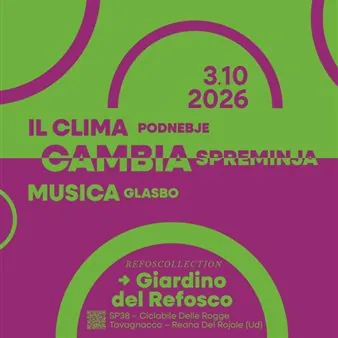

sab 3 ott
Il clima cambia musica
3 ottobre Refoscollection - il Giardino del Refosco SP38 – Ciclabile delle Rogge – 33010 Tavagnacco – Reana del Rojale (UD) Il progetto “Il clima cambia musica” si propone di sensibilizzare la società civile sui cambiamenti climatici e promuovere una maggiore resilienza della…
 Indicazioni
Indicazioni
- Costi e prenotazioni
- Costo non indicato · Prenotazione non indicata
- Programma
- Programma da verificare. Apri la fonte ufficiale per orari e possibili aggiornamenti.
- In caso di maltempo
- Nessuna indicazione specifica pubblicata.
- Note
- Acquisito automaticamente dalla fonte.
L’EVENTO
Descrizione completa
Il progetto “Il clima cambia musica” si propone di sensibilizzare la società civile sui cambiamenti climatici e promuovere una maggiore resilienza della comunità attraverso la produzione di un evento culturale multidisciplinare sostenibile in Friuli Venezia Giulia.
Il suono del riciclo ore 10:00
Lettura animata, ascolto e costruzione di strumenti con materiali di recupero.
Laboratorio per bambine e bambini dagli 8 ai 13 anni a cura di Giorgia Santoro.
Prenotazione al link
Drum circle in vigna ore 11:00
Drum circle per bambine e bambini dagli 8 ai 13 anni a cura di Luce in Collina.
Il clima cambia l’arte ore 17:00
Come suonerebbero le Quattro Stagioni di Vivaldi oggi?
Presentazione del progetto “For Seasons” a cura del musicologo Alessio Screm
Il clima cambia il paesaggio ore 17:00
Laboratorio artistico sul paesaggio dedicato a bambine e bambini dai 6 ai 10 anni a cura di Giorgia Santoro.
L’attività laboratoriale si svolgerà in parallelo a “Il clima cambia l’arte” e “Il clima cambia gusto”, a cui gli accompagnatori dei bambini potranno partecipare liberamente.
Il clima cambia gusto ore 17:30
Come cambiano le eccellenze enogastronomiche del territorio?
Presentazione del vino Refosco 22 a cura dell’Azienda Agricolo Tonutti
Il costo della degustazione guidata è pari a 10,00 € e comprende la degustazione di tre calici di Tonutti Vini & Vigneti.
Il pagamento avverrà in loco, prenotazione al link
Refoscollection è raggiungibile esclusivamente in bici o a piedi attraverso la Ciclovia delle Rogge.
Per conoscere il sentiero ciclopedonale o individuare i parcheggi auto più vicini ti invitiamo a consultare le mappe interattive che trovi cliccando qui .
Se hai problemi di deambulazione ti invitiamo a contattarci in modo da fornirti tutte le informazioni necessarie per raggiungere l'appuntamento.
Per maggiori informazioni rivolgersi a: biglietteria@simularte.it / 0432 1482124
IL PROGRAMMA
Programma e orari
Appuntamenti raccolti dalle fonti elencate. Dove manca un orario, non è ancora disponibile in questa scheda.
Programma pubblicato
- Dal 2026-10-03 al 2026-10-03
INFORMAZIONI UTILI
Prima di partire
- Controllare la fonte prima di partire.
ORGANIZZAZIONE